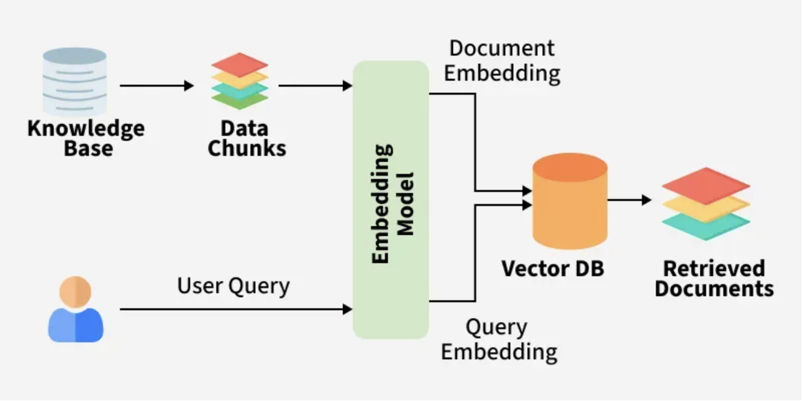

Overview
What Is Retrieval-Augmented Generation (RAG)?¶
Retrieval-Augmented Generation (RAG) is an advanced paradigm in natural language processing that combines the strengths of retrieval-based methods and large generative language models (LLMs). By grounding the generation process in external knowledge sources, RAG significantly improves response accuracy, reduces model hallucinations and enables domain-adaptive, knowledge-intensive applications.
Retrieval-Augmented Generation (RAG) is a way to make AI answers more reliable by combining searching for relevant information and then generating a response. Instead of guessing based only on old training data, it first finds useful data from external sources (like documents or databases) and then uses it to give a better answer.
- Retrieval → finding relevant information from external sources
- Generation → using a large language model (LLM) to produce an answer based on that information
It helps AI systems answer questions using up-to-date or domain-specific knowledge instead of relying only on what was learned during training.
Simple analogy
Think of RAG like an “open-book exam”:
- A normal LLM answers from memory.
- A RAG system first looks up relevant documents, then answers using those documents.
How RAG works¶
Typical pipeline:
-
User asks a question
What’s our company refund policy?
-
Retriever searches knowledge sources
PDFsdatabaseswebsitesinternal docsvector databases
-
Relevant chunks are returned
Example: policy paragraphs about refunds
-
LLM generates the response
It uses the retrieved content as context
Components of RAG¶
The main components of RAG are:
-
External Knowledge Source: Stores domain specific or general information like documents, APIs or databases.
-
Text Chunking and Preprocessing: Breaks large text into smaller, manageable chunks and cleans it for consistency.
-
Embedding Model: Converts text into numerical vectors that capture semantic meaning.
-
Vector Database: Stores embeddings and enables similarity search for fast information retrieval.
-
Query Encoder: Transforms the user’s query into a vector for comparison with stored embeddings.
-
Retriever: Finds and returns the most relevant chunks from the database based on query similarity.
-
Prompt Augmentation Layer: Combines retrieved chunks with the user’s query to provide context to the LLM.
-
LLM (Generator): Generates a grounded response using both the query and retrieved knowledge.
Working of RAG¶

| # | Chunking Type | Description | Chunk Unit | Best File/Data Types | Enterprise Use Cases | LangChain Support | External Tools/Common Integrations |
|---|---|---|---|---|---|---|---|
| 1 | Character Chunking | Fixed-size splitting by character count | Characters | TXT, logs, raw text | Simple RAG, log analysis | Native | None |
| 2 | Word Chunking | Splits by number of words | Words | TXT, chat data | NLP preprocessing | Custom | NLTK, SpaCy |
| 3 | Line Chunking | Splits line by line | Lines | Logs, CSV-like text | Monitoring systems | Custom | None |
| 4 | Token Chunking | Splits by LLM token count | Tokens | LLM-ready text | GPT/Claude/Llama systems | Native | tiktoken |
| 5 | Recursive Chunking | Recursive separator-based splitting | Paragraph/sentence | PDFs, DOCX | Enterprise RAG | Native | None |
| 6 | Sentence Chunking | Splits using sentence boundaries | Sentences | Legal, medical docs | Research AI | Partial | NLTK, SpaCy |
| 7 | Paragraph Chunking | Splits by paragraph structure | Paragraphs | Articles, books | Knowledge bases | Custom | None |
| 8 | Semantic Chunking | Embedding similarity-based splitting | Semantic blocks | Long enterprise docs | High-accuracy RAG | Experimental | LlamaIndex, Haystack |
| 9 | Topic-Based Chunking | Topic modeling driven chunking | Topics | Research papers | Analytics AI | Custom | BERTopic, LDA |
| 10 | Adaptive Chunking | Dynamic chunk sizes based on content | Variable | Mixed enterprise data | Agentic RAG | Custom | LangGraph |
| 11 | Agentic Chunking | LLM determines chunk boundaries | Variable | Complex data | Autonomous AI agents | Custom | LangGraph, CrewAI |
| 12 | Sliding Window Chunking | Overlapping chunk windows | Overlapping text | Long context docs | Continuity preservation | Native | None |
| 13 | Parent-Child Chunking | Small retrieval chunks linked to larger parent chunks | Parent/child docs | Manuals, KBs | Enterprise retrieval | Native | None |
| 14 | Hierarchical Chunking | Multi-level chunk tree structure | Sections/subsections | Books, large docs | Multi-hop retrieval | Partial | LlamaIndex |
| 15 | Metadata-Aware Chunking | Chunking influenced by metadata | Metadata groups | Enterprise docs | Governance/compliance | Custom | Vector DB metadata |
| 16 | Query-Aware Chunking | Optimized for expected user queries | Query-focused blocks | FAQ, support docs | Customer support AI | Custom | RAG evaluators |
| 17 | Retrieval-Optimized Chunking | Designed for vector DB performance | Optimized chunks | Any enterprise data | Recall@K optimization | Custom | Pinecone, Weaviate |
| 18 | Compression Chunking | Summarized hierarchical chunks | Compressed summaries | Large corpora | Long-context AI | Custom | LangGraph |
| 19 | Structure-Aware Chunking | Uses document structure | Sections/headers | DOCX, PDFs | Documentation AI | Partial | Unstructured |
| 20 | Layout-Aware Chunking | Uses visual layout coordinates | Layout blocks | Scanned PDFs | Invoice/report AI | External | LayoutParser, Docling |
| 21 | Markdown Chunking | Uses markdown hierarchy | Markdown headers | README, docs | Technical documentation | Native | None |
| 22 | HTML/DOM Chunking | Uses webpage DOM structure | HTML sections | Websites | Web chatbots | Partial | BeautifulSoup |
| 23 | XML Chunking | XML tree-aware splitting | XML nodes | XML configs | Enterprise integrations | Custom | lxml |
| 24 | JSON Chunking | Schema/path-aware splitting | JSON objects | APIs, FHIR | Structured RAG | Custom | jq, pydantic |
| 25 | YAML Chunking | YAML structure-aware chunking | YAML blocks | DevOps configs | CI/CD AI | Custom | PyYAML |
| 26 | Table-Aware Chunking | Specialized handling for tables | Rows/cells | Excel, CSV | BI/financial AI | External | Camelot, Tabula |
| 27 | Spreadsheet Chunking | Workbook/sheet-aware splitting | Sheets/tables | XLSX, ODS | Reporting AI | External | openpyxl, pandas |
| 28 | Code Chunking | AST/function-aware splitting | Functions/classes | Source code | Copilot/code AI | Native | tree-sitter |
| 29 | AST-Based Chunking | Abstract syntax tree parsing | AST nodes | Codebases | Static analysis AI | External | tree-sitter |
| 30 | API Schema Chunking | OpenAPI/Swagger-aware chunking | Endpoints/schemas | API specs | API copilots | Custom | Swagger parsers |
| 31 | Graph Chunking | Graph neighborhood splitting | Nodes/edges | Knowledge graphs | GraphRAG | External | Neo4j |
| 32 | Knowledge Unit Chunking | Fact/entity-level chunking | Facts/entities | Enterprise KBs | Fact-grounded AI | Custom | RDF/SPARQL |
| 33 | Entity-Centric Chunking | Entity relationship-based chunks | Entities | CRM/EHR data | Relationship AI | Custom | spaCy, Neo4j |
| 34 | OCR Chunking | OCR text block segmentation | OCR blocks | Scanned images | Digitization AI | External | Tesseract |
| 35 | Image-Aware Chunking | Region/object-aware chunking | Image regions | Medical images | Vision RAG | External | MONAI, OpenCV |
| 36 | Multi-Modal Chunking | Combines text/image/audio/video | Multi-modal units | Mixed media | Enterprise multimodal AI | Partial | LlamaIndex |
| 37 | Audio Chunking | Audio semantic segmentation | Audio segments | Calls, podcasts | Voice AI | External | Whisper |
| 38 | Speaker-Aware Chunking | Splits by speaker changes | Speaker turns | Meetings, calls | Contact center AI | External | Pyannote |
| 39 | Video Chunking | Scene/frame-aware splitting | Scenes | Videos | Surveillance/search AI | External | PySceneDetect |
| 40 | Time-Series Chunking | Temporal window segmentation | Time windows | IoT, ECG | Monitoring AI | Custom | pandas |
| 41 | Event-Based Chunking | Splits around events | Events | Logs, SIEM | Incident AI | Custom | ELK, Splunk |
| 42 | Log Chunking | Structured log segmentation | Log groups | DevOps logs | Observability AI | Custom | Fluentd |
| 43 | Conversation Chunking | Dialogue/session-aware splitting | Conversations | Chat/email | Conversational AI | Custom | LangGraph |
| 44 | Email Thread Chunking | Email chain grouping | Threads | Emails | Enterprise support AI | Custom | Outlook/Gmail APIs |
| 45 | Session-Based Chunking | User-session-aware chunking | Sessions | User activity streams | Behavioral AI | Custom | Kafka |
| 46 | Stream Chunking | Incremental real-time chunking | Streaming windows | Kafka streams | Real-time AI | Custom | Kafka, Flink |
| 47 | Incremental Chunking | Updates chunks incrementally | Delta chunks | Continuously changing docs | Live KB systems | Custom | Delta Lake |
| 48 | Hybrid Chunking | Combination of multiple chunkers | Hybrid units | Enterprise mixed data | Advanced RAG | Custom | LangGraph |
| 49 | Security-Aware Chunking | Splits based on security classification | Security domains | Regulated data | Compliance AI | Custom | DLP systems |
| 50 | Domain-Specific Chunking | Customized for industry schemas | Domain objects | Healthcare, banking | Industry AI | Custom | FHIR, HL7 |
| 51 | Medical Imaging Chunking | MRI/CT region segmentation | Anatomical regions | DICOM images | Neuro digital twin | External | MONAI |
| 52 | CAD/Engineering Chunking | Engineering drawing segmentation | Diagram regions | CAD files | Manufacturing AI | External | OpenCascade |
| 53 | GIS/Spatial Chunking | Geo-spatial partitioning | Spatial tiles | Maps/GIS | Location intelligence | External | GeoPandas |
| 54 | Slide-Aware Chunking | PPT slide-level chunking | Slides | PPT/PPTX | Presentation AI | External | python-pptx |
| 55 | Document Section Chunking | Chapter/section splitting | Sections | Books/manuals | Long-form retrieval | Partial | Unstructured |
| 56 | Citation-Aware Chunking | Keeps references linked to content | Citation groups | Research papers | Academic AI | Custom | Semantic Scholar APIs |
| 57 | Regulatory Chunking | Policy/control-aware chunking | Clauses/controls | Compliance docs | GRC AI | Custom | Policy parsers |
| 58 | Financial Statement Chunking | Statement-aware segmentation | Financial sections | Annual reports | Finance AI | External | SEC parsers |
| 59 | EHR/FHIR Chunking | Healthcare schema-aware chunking | Clinical records | EHR/FHIR JSON/XML | Healthcare RAG | Custom | HL7/FHIR tools |
| 60 | Knowledge Graph Hybrid Chunking | Combines semantic + graph retrieval | Entity-context groups | Enterprise knowledge systems | GraphRAG enterprise AI | External | Neo4j + LangChain |
Advanced / Niche Chunking Types¶
| # | Chunking Type | Description | Typical Usage |
|---|---|---|---|
| 61 | Attention-Aware Chunking | Uses transformer attention patterns to decide chunk boundaries | Advanced LLM optimization |
| 62 | Perplexity-Based Chunking | Splits where language-model perplexity changes significantly | Research NLP systems |
| 63 | Reinforcement-Learned Chunking | RL model learns optimal chunk strategy | Experimental agentic AI |
| 64 | Cognitive Chunking | Mimics human reading/comprehension patterns | Cognitive AI research |
| 65 | Memory-Augmented Chunking | Chunking linked with AI memory systems | Long-term AI agents |
| 66 | Retrieval Feedback Chunking | Chunk strategy optimized using retrieval evaluation feedback | Self-improving RAG |
| 67 | Embedding Drift-Aware Chunking | Detects semantic drift across embeddings | Continually evolving KBs |
| 68 | Delta / Diff Chunking | Only changed content is chunked/indexed | Versioned documents |
| 69 | Version-Aware Chunking | Tracks chunk lineage across versions | Git/document history |
| 70 | Temporal Knowledge Chunking | Preserves time-validity of facts | Financial/legal AI |
| 71 | Causal Chunking | Preserves causal relationships | Scientific AI |
| 72 | Workflow-Aware Chunking | Chunks according to business workflows | BPM/ERP systems |
| 73 | Ontology-Aware Chunking | Uses enterprise ontology hierarchy | Semantic enterprise AI |
| 74 | Taxonomy-Aware Chunking | Uses taxonomy classifications | Product catalogs |
| 75 | Policy-Aware Chunking | Segments based on governance boundaries | Compliance AI |
| 76 | Federated Chunking | Distributed chunking across systems/data centers | Large-scale enterprise AI |
| 77 | Privacy-Preserving Chunking | Sensitive-data isolation during chunking | HIPAA/GDPR systems |
| 78 | Encryption-Aware Chunking | Chunking compatible with encrypted retrieval | Secure RAG |
| 79 | Vector Density Chunking | Optimized based on embedding-space density | Vector DB optimization |
| 80 | Multi-Hop Retrieval Chunking | Designed for graph/multi-hop reasoning | Agentic GraphRAG |
| 81 | Reasoning-Step Chunking | Preserves chain-of-thought structure | Reasoning agents |
| 82 | Tool-Aware Chunking | Optimized for agent tool selection | Agentic systems |
| 83 | Simulation-State Chunking | State-based chunking for simulations/digital twins | Neuro/industrial twins |
| 84 | Sensor Fusion Chunking | Combines multimodal sensor streams | Autonomous systems |
| 85 | Edge-Aware Chunking | Lightweight chunking for edge devices | IoT AI |
| 86 | GPU-Optimized Chunking | Chunk sizing optimized for GPU inference | High-performance AI |
| 87 | Batch Retrieval Chunking | Optimized for large concurrent retrieval | Enterprise-scale RAG |
| 88 | Cache-Aware Chunking | Improves semantic cache hit rates | Low-latency AI |
| 89 | Hierarchical Semantic Graph Chunking | Combines semantic + hierarchical + graph chunking | Advanced GraphRAG |
| 90 | Autonomous Self-Rechunking | System dynamically re-chunks based on usage patterns | Self-evolving AI systems |
| Rank | Chunking Type Used in Production | Approx Enterprise Adoption % | Typical Data/File Types | Common Industries | Why It’s Used |
|---|---|---|---|---|---|
| 1 | Recursive Character Chunking | 85–90% | PDF, DOCX, TXT, Confluence, SharePoint, KB docs | All industries | Simple, stable, good retrieval quality |
| 2 | Token-Based Chunking | 80–85% | LLM text, chat history, PDFs | GenAI platforms | Prevents token overflow |
| 3 | Sliding Window / Overlap Chunking | 75–80% | Long documents, manuals | Enterprise RAG | Preserves context continuity |
| 4 | Semantic Chunking | 55–70% | Research docs, healthcare, banking | Advanced AI enterprises | Better semantic retrieval |
| 5 | Metadata-Aware Chunking | 50–65% | Enterprise documents, tickets, KBs | Banking, ITSM, healthcare | Improves filtering/governance |
| 6 | Parent-Child Chunking | 45–60% | Large manuals, policies, SOPs | Banking, ERP, insurance | Better retrieval + context |
| 7 | Structure/Header-Aware Chunking | 45–55% | DOCX, Markdown, PDFs | Documentation platforms | Keeps hierarchy intact |
| 8 | Table-Aware Chunking | 35–50% | Excel, CSV, reports | Finance, ERP, analytics | Critical for structured data |
| 9 | Layout-Aware Chunking | 30–45% | Complex/scanned PDFs | Insurance, legal, healthcare | Needed for OCR/layout docs |
| 10 | HTML/DOM Chunking | 30–40% | Websites, portals, HTML docs | ERP/helpdesk/chatbots | Maintains webpage structure |
| 11 | Code-Aware Chunking | 25–40% | Source code repositories | DevOps/software companies | Preserves functions/classes |
| 12 | Markdown Chunking | 20–35% | README, GitHub docs | Developer platforms | Technical documentation |
| 13 | JSON/XML Schema-Aware Chunking | 20–30% | APIs, configs, FHIR | Healthcare, SaaS | Structured retrieval |
| 14 | Event-Based Chunking | 15–25% | Logs, SIEM events | DevOps/SRE/SOC | Incident correlation |
| 15 | Conversation/Thread Chunking | 15–25% | Emails, chats, call transcripts | Support/contact centers | Preserves conversational flow |
| 16 | Multi-Modal Chunking | 10–20% | Image + text + audio | Healthcare, media | Modern multimodal AI |
| 17 | Graph-Based Chunking | 8–15% | Knowledge graphs | Large enterprises | Multi-hop reasoning |
| 18 | Time-Series Chunking | 8–15% | IoT, telemetry, ECG | Manufacturing, healthcare | Temporal analytics |
| 19 | OCR-Based Chunking | 8–12% | Scanned docs/images | BFSI, government | Legacy document processing |
| 20 | Adaptive/Dynamic Chunking | 5–10% | Mixed enterprise datasets | AI-first enterprises | Better optimization |
| 21 | Audio Chunking | 5–10% | Calls, meetings | Contact center AI | Voice intelligence |
| 22 | Video Chunking | 3–8% | CCTV, training videos | Security/media | Scene retrieval |
| 23 | GraphRAG Hybrid Chunking | 3–7% | Enterprise knowledge systems | Advanced AI orgs | Complex reasoning |
| 24 | Agentic Chunking | 2–5% | Autonomous AI systems | Research/advanced AI | Dynamic AI orchestration |
| 25 | Attention/RL-Based Chunking | <1% | Experimental AI workloads | Research labs | Experimental optimization |
Most Common File Types in Production RAG¶
| File Type | Enterprise Usage % | Typical Chunking Used |
|---|---|---|
| 90%+ | Recursive + semantic + layout-aware | |
| DOCX | 75%+ | Structure-aware + recursive |
| TXT | 70%+ | Character/token |
| HTML/Web Pages | 60%+ | DOM-aware |
| Markdown | 50%+ | Header-aware |
| Excel/CSV | 45%+ | Table-aware |
| JSON/XML | 40%+ | Schema-aware |
| Emails | 35%+ | Thread-aware |
| Source Code | 30%+ | Code-aware |
| PPT/PPTX | 25%+ | Slide-aware |
| Images/Scanned PDFs | 20%+ | OCR/layout-aware |
| Audio | 10%+ | Speaker/topic-aware |
| Video | 5%+ | Scene-aware |
| IoT/Telemetry | 5%+ | Time-series/event |
Real Production Architecture (Most Common)¶
Document Loader ↓ OCR/Layout Parsing (if needed) ↓ Recursive Chunking ↓ Metadata Enrichment ↓ Optional Semantic Chunking ↓ Embedding ↓ Vector DB ↓ Hybrid Retrieval ↓ Re-ranking ↓ LLM
Actual Top Production Combination¶
| Enterprise Maturity | Common Chunking Stack |
|---|---|
| Beginner RAG | Recursive + overlap |
| Intermediate RAG | Recursive + metadata |
| Advanced Enterprise RAG | Semantic + parent-child + metadata |
| FAANG/Hyperscale | Layout-aware + semantic + GraphRAG + adaptive |
Retrieval Metrics (Most Important)¶
| Metric | Description | Ideal Direction |
|---|---|---|
| Recall@K | Relevant documents retrieved in top K | Higher |
| Precision@K | Relevant docs among retrieved docs | Higher |
| Hit Rate | At least one relevant chunk retrieved | Higher |
| MRR (Mean Reciprocal Rank) | Rank quality of first correct result | Higher |
| MAP (Mean Average Precision) | Overall ranking quality | Higher |
| NDCG | Ranking quality considering relevance scores | Higher |
| Top-K Accuracy | Correct chunk appears in top K | Higher |
| Retrieval Accuracy | Correct retrieval percentage | Higher |
| Context Recall | Relevant context retrieved | Higher |
| Context Precision | Retrieved context relevance | Higher |
| Semantic Similarity Score | Query ↔ chunk similarity | Higher |
| Retriever Latency | Retrieval response time | Lower |
| Failed Retrieval Rate | Queries with no useful retrieval | Lower |
| Empty Retrieval Rate | No chunks returned | Lower |
| Duplicate Chunk Rate | Duplicate retrieved chunks | Lower |
| Retrieval Coverage | KB coverage during retrieval | Higher |
| Noise Ratio | Irrelevant retrieval percentage | Lower |
| Retrieval Diversity | Diversity of retrieved chunks | Balanced |
| Hybrid Search Accuracy | BM25 + vector quality | Higher |
| Re-ranking Gain | Improvement after reranking | Higher |
Generation Metrics¶
| Metric | Description | Ideal |
|---|---|---|
| Answer Correctness | Accuracy of generated answer | Higher |
| Answer Relevance | Relevance to user query | Higher |
| Answer Completeness | Missing information measure | Higher |
| Coherence | Logical readability | Higher |
| Fluency | Grammar/natural language quality | Higher |
| Consistency | No contradictions | Higher |
| Conciseness | Avoid unnecessary verbosity | Balanced |
| Toxicity Score | Harmful content probability | Lower |
| Safety Score | Safe response quality | Higher |
| Instruction Adherence | Follows prompt instructions | Higher |
| Helpfulness | User usefulness rating | Higher |
| Factual Accuracy | Fact correctness | Higher |
| Readability Score | Human readability | Higher |
| Response Diversity | Variation across outputs | Balanced |
| Response Stability | Consistency across runs | Higher |
Grounding / Hallucination Metrics¶
| Metric | Description | Ideal |
|---|---|---|
| Faithfulness | Answer grounded in retrieved docs | Higher |
| Groundedness | Supported by source context | Higher |
| Hallucination Rate | Unsupported/generated facts | Lower |
| Citation Accuracy | Correct source attribution | Higher |
| Attribution Score | Traceability to sources | Higher |
| Unsupported Claim Rate | Claims not in retrieval | Lower |
| Context Utilization | How much retrieved context used | Higher |
| Source Consistency | Agreement with source docs | Higher |
| Evidence Match Score | Evidence-answer alignment | Higher |
| Fabrication Rate | Invented entities/facts | Lower |
Chunking Metrics¶
| Metric | Description | Ideal |
|---|---|---|
| Chunk Relevance | Chunk usefulness | Higher |
| Chunk Coherence | Semantic continuity | Higher |
| Chunk Density | Information per chunk | Balanced |
| Chunk Overlap Efficiency | Useful overlap percentage | Balanced |
| Chunk Redundancy | Duplicate info across chunks | Lower |
| Chunk Coverage | Document coverage quality | Higher |
| Average Chunk Size | Tokens/chars per chunk | Optimized |
| Context Fragmentation | Broken semantic continuity | Lower |
| Semantic Boundary Accuracy | Correct semantic splitting | Higher |
| Retrieval-to-Chunk Alignment | Retrieval precision per chunk | Higher |
Embedding Metrics¶
| Metric | Description | Ideal |
|---|---|---|
| Embedding Similarity | Semantic closeness | Higher |
| Vector Drift | Embedding consistency over time | Lower |
| Embedding Latency | Time to generate embeddings | Lower |
| Embedding Dimensionality Efficiency | Performance vs vector size | Optimized |
| Cluster Separation | Distinct semantic groups | Higher |
| Intra-cluster Similarity | Similarity within group | Higher |
| Inter-cluster Distance | Difference between groups | Higher |
| ANN Recall | Approx nearest neighbor quality | Higher |
| Vector Compression Loss | Loss after quantization | Lower |
Re-ranking Metrics¶
| Metric | Description | Ideal |
|---|---|---|
| Cross-Encoder Accuracy | Re-ranker precision | Higher |
| Re-ranking Latency | Re-rank speed | Lower |
| Ranking Improvement Score | Improvement after reranking | Higher |
| NDCG Improvement | Ranking enhancement | Higher |
| Pairwise Ranking Accuracy | Correct pair ordering | Higher |
Agentic AI Metrics¶
| Metric | Description | Ideal |
|---|---|---|
| Tool Selection Accuracy | Correct tool chosen | Higher |
| Task Completion Rate | Successfully completed tasks | Higher |
| Planning Accuracy | Quality of agent plan | Higher |
| Multi-Agent Coordination Score | Collaboration quality | Higher |
| Autonomous Success Rate | Independent task success | Higher |
| Recovery Success Rate | Recovery after failure | Higher |
| Memory Recall Accuracy | Correct memory retrieval | Higher |
| Reflection Quality | Self-correction quality | Higher |
| Agent Latency | Agent response speed | Lower |
LLM Performance Metrics¶
| Metric | Description | Ideal |
|---|---|---|
| Tokens/sec | Inference throughput | Higher |
| TTFT (Time to First Token) | Initial response delay | Lower |
| Completion Latency | Full response time | Lower |
| Context Window Utilization | Efficient context use | Higher |
| Prompt Efficiency | Quality vs prompt size | Higher |
| Token Efficiency | Useful output/token | Higher |
| GPU Utilization | Hardware efficiency | Higher |
| Inference Cost | Cost per request | Lower |
Infrastructure & System Metrics¶
| Metric | Description | Ideal |
|---|---|---|
| API Latency | End-to-end response time | Lower |
| Throughput | Requests/sec | Higher |
| Availability | Uptime percentage | Higher |
| Error Rate | Failed requests | Lower |
| Cache Hit Rate | Cache efficiency | Higher |
| Vector DB Query Time | Search speed | Lower |
| CPU Utilization | Resource efficiency | Balanced |
| GPU Memory Usage | Memory efficiency | Optimized |
| Concurrent User Capacity | Scalability | Higher |
| Queue Wait Time | Processing delay | Lower |
Cost Metrics¶
| Metric | Description | Ideal |
|---|---|---|
| Cost per Query | Total query cost | Lower |
| Embedding Cost | Vector generation cost | Lower |
| Storage Cost | Vector DB storage | Lower |
| GPU Cost | Inference hardware cost | Lower |
| Token Cost | LLM token spending | Lower |
| Re-ranking Cost | Cross-encoder cost | Lower |
User Experience Metrics¶
| Metric | Description | Ideal |
|---|---|---|
| CSAT | Customer satisfaction | Higher |
| User Retention | Continued usage | Higher |
| Query Success Rate | User got desired answer | Higher |
| Feedback Score | User ratings | Higher |
| Escalation Rate | Human handoff frequency | Lower |
| Session Duration | Engagement | Contextual |
| Click-through Rate | Interaction engagement | Higher |
Security & Governance Metrics¶
| Metric | Description | Ideal |
|---|---|---|
| PII Leakage Rate | Sensitive data exposure | Lower |
| Prompt Injection Success Rate | Jailbreak success | Lower |
| Access Control Violations | Unauthorized access | Lower |
| Compliance Adherence | GDPR/HIPAA alignment | Higher |
| Audit Traceability | Traceable operations | Higher |
| Data Lineage Accuracy | Source tracking | Higher |
Multi-Modal Metrics¶
| Metric | Description | Ideal |
|---|---|---|
| OCR Accuracy | Correct text extraction | Higher |
| Image Caption Accuracy | Visual understanding | Higher |
| Audio Transcription Accuracy | Speech-to-text quality | Higher |
| Video Scene Retrieval Accuracy | Relevant scene retrieval | Higher |
| Multi-modal Alignment Score | Alignment across modalities | Higher |
Benchmark Metrics¶
| Benchmark | Purpose |
|---|---|
| MTEB | Embedding benchmark |
| BEIR | Retrieval benchmark |
| HELM | Holistic LLM evaluation |
| RAGAS | RAG evaluation |
| DeepEval | LLM evaluation |
| TruthfulQA | Hallucination benchmark |
| HumanEval | Code generation |
| GSM8K | Reasoning/math |
| SWE-Bench | Software engineering agents |
Business KPIs¶
| KPI | Description |
|---|---|
| SLA Compliance | Meets support SLA |
| Ticket Deflection Rate | Reduced support tickets |
| Productivity Gain | Time saved |
| Resolution Time Reduction | Faster issue solving |
| Knowledge Reuse Rate | KB usage |
| Revenue Impact | Financial value |
| Operational Cost Reduction | Reduced enterprise cost |
| Employee Efficiency | Productivity improvement |
Most Important Metrics Used in Real Enterprise RAG¶
| Priority | Metric |
|---|---|
| 1 | Recall@K |
| 2 | Precision@K |
| 3 | Faithfulness |
| 4 | Groundedness |
| 5 | Hallucination Rate |
| 6 | Answer Correctness |
| 7 | Context Relevance |
| 8 | Latency |
| 9 | Cost per Query |
| 10 | Retrieval Accuracy |
Common Enterprise Evaluation Stack¶
Retrieval Metrics
+
Grounding Metrics
+
Generation Metrics
+
Latency Metrics
+
Cost Metrics
+
Human Evaluation
Groundedness¶
Groundedness
-
Focuses on:
Did the answer come from retrieved documents? -
LLM Judge = evaluator Groundedness Score = evaluation result
What Generates the Score?
The judge model generates it using:
- reasoning
- semantic understanding
- context comparison
- hallucination detection
Common Enterprise Groundedness Prompt¶
You are an AI evaluator.
Question:
{question}
Retrieved Context:
{context}
Generated Answer:
{answer}
Evaluate whether the answer is fully supported by the retrieved context.
Return:
1. Groundedness score (0-1)
2. Unsupported claims
3. Explanation
Faithfulness¶
- Focuses on:
Did the answer stay true to the retrieved documents?
Example
Retrieved Context: The refund period is 30 days.
Answer: Refund period is 30 days.
| Metric | Result |
|---|---|
| Groundedness | High |
| Faithfulness | High |
Hallucinated Example
Retrieved Context: Refund period is 30 days.
Answer: Refund period is 60 days.
| Metric | Result |
|---|---|
| Groundedness | Low |
| Faithfulness | Low |
Difference
Groundedness
Checks: Was answer grounded in retrieved evidence?
Main concern:
- retrieval support
Faithfulness
Checks: Did answer preserve factual truth from context?
Main concern:
- factual consistency
Analysis
| Metric | Interpretation |
|---|---|
| Groundedness | High (based on context) |
| Faithfulness | Medium-high (less precise wording) |
Hallucination¶
What is Hallucination Rate?
Hallucination Rate measures: How often the LLM generates information NOT supported by evidence or reality.
In RAG systems, hallucination usually means:
- unsupported claims
- invented facts
- wrong numbers
- fake citations
- fabricated entities
Basic Formula
Percentage Formula
Example
| Answer | Hallucinated? |
|---|---|
| Answer 1 | Yes |
| Answer 2 | No |
| Answer 3 | Yes |
| Answer 4 | No |
Hallucination Rate:
The hallucination rate is 50%.
Example Judge Prompt
You are an evaluator.
Question:
{question}
Retrieved Context:
{context}
Generated Answer:
{answer}
Identify unsupported claims.
Return:
- hallucination detected (true/false)
- hallucination score (0-1)
- explanation
1. Faithfulness Metric (Cosine Similarity)¶
from sentence_transformers import SentenceTransformer
from sklearn.metrics.pairwise import cosine_similarity
# Load embedding model
model = SentenceTransformer('all-MiniLM-L6-v2')
# Retrieved context
context = """
France is a country in Europe.
Paris is the capital of France.
"""
# Generated answer
answer = "Paris is the capital city of France."
# Generate embeddings
context_embedding = model.encode([context])
answer_embedding = model.encode([answer])
# Calculate cosine similarity
faithfulness_score = cosine_similarity(
context_embedding,
answer_embedding
)[0][0]
print("Faithfulness Score:", round(faithfulness_score, 4))
2. Correctness Metric¶
from sentence_transformers import SentenceTransformer
from sklearn.metrics.pairwise import cosine_similarity
model = SentenceTransformer('all-MiniLM-L6-v2')
# Ground truth answer
ground_truth = "Paris is the capital of France."
# Generated answer
generated_answer = "Paris is France's capital city."
# Embeddings
gt_embedding = model.encode([ground_truth])
gen_embedding = model.encode([generated_answer])
# Similarity
correctness_score = cosine_similarity(
gt_embedding,
gen_embedding
)[0][0]
print("Correctness Score:", round(correctness_score, 4))
3. Groundedness Metric¶
from sentence_transformers import SentenceTransformer
from sklearn.metrics.pairwise import cosine_similarity
import nltk
nltk.download('punkt')
model = SentenceTransformer('all-MiniLM-L6-v2')
# Retrieved context
context = """
Python is a programming language created by Guido van Rossum in 1991.
"""
# Generated answer
answer = """
Python was created by Guido van Rossum in 1991.
"""
# Split answer into sentences
sentences = nltk.sent_tokenize(answer)
supported = 0
# Context embedding
context_embedding = model.encode([context])
for sentence in sentences:
sentence_embedding = model.encode([sentence])
similarity = cosine_similarity(
sentence_embedding,
context_embedding
)[0][0]
print(f"Sentence: {sentence}")
print(f"Similarity: {similarity:.4f}")
if similarity > 0.80:
supported += 1
# Groundedness score
groundedness_score = supported / len(sentences)
print("\nGroundedness Score:", round(groundedness_score, 4))
4. Hallucination Rate Metric¶
from sentence_transformers import SentenceTransformer
from sklearn.metrics.pairwise import cosine_similarity
import nltk
nltk.download('punkt')
model = SentenceTransformer('all-MiniLM-L6-v2')
# Retrieved context
context = """
Python was created by Guido van Rossum.
"""
# Generated answer
answer = """
Python was created by Guido van Rossum in California in 1991.
"""
# Sentence split
sentences = nltk.sent_tokenize(answer)
unsupported = 0
context_embedding = model.encode([context])
for sentence in sentences:
sentence_embedding = model.encode([sentence])
similarity = cosine_similarity(
sentence_embedding,
context_embedding
)[0][0]
print(f"Sentence: {sentence}")
print(f"Similarity: {similarity:.4f}")
if similarity < 0.80:
unsupported += 1
# Hallucination rate
hallucination_rate = (
unsupported / len(sentences)
) * 100
print("\nHallucination Rate:", round(hallucination_rate, 2), "%")
5. Answer Relevancy Metric¶
from sentence_transformers import SentenceTransformer
from sklearn.metrics.pairwise import cosine_similarity
model = SentenceTransformer('all-MiniLM-L6-v2')
# User query
query = "What is Kubernetes?"
# Generated answer
answer = """
Kubernetes is an open-source container orchestration platform.
"""
# Embeddings
query_embedding = model.encode([query])
answer_embedding = model.encode([answer])
# Similarity
relevancy_score = cosine_similarity(
query_embedding,
answer_embedding
)[0][0]
print("Answer Relevancy Score:", round(relevancy_score, 4))
6. Combined RAG Evaluation Script¶
from sentence_transformers import SentenceTransformer
from sklearn.metrics.pairwise import cosine_similarity
model = SentenceTransformer('all-MiniLM-L6-v2')
# Inputs
query = "Who invented Python?"
retrieved_context = """
Python was invented by Guido van Rossum.
"""
generated_answer = """
Python was invented by Guido van Rossum in 1991.
"""
ground_truth = """
Python was invented by Guido van Rossum.
"""
# Embeddings
query_emb = model.encode([query])
context_emb = model.encode([retrieved_context])
answer_emb = model.encode([generated_answer])
truth_emb = model.encode([ground_truth])
# Faithfulness
faithfulness = cosine_similarity(
context_emb,
answer_emb
)[0][0]
# Correctness
correctness = cosine_similarity(
truth_emb,
answer_emb
)[0][0]
# Relevancy
relevancy = cosine_similarity(
query_emb,
answer_emb
)[0][0]
print("\n===== RAG Evaluation =====")
print("Faithfulness :", round(faithfulness, 4))
print("Correctness :", round(correctness, 4))
print("Relevancy :", round(relevancy, 4))